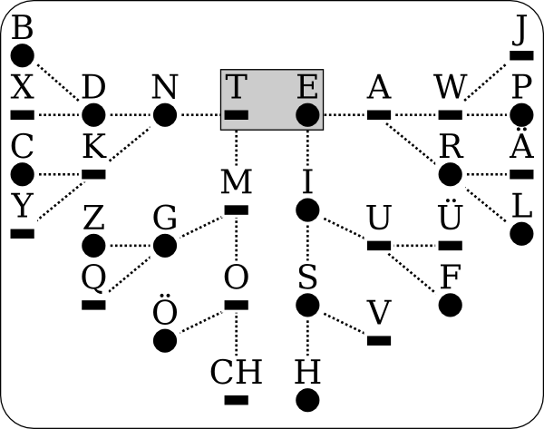

- Morse
- Morse wurde entwickelt um Nachrichten elektronisch zu versenden. Es gab nur zwei Zustände die übertragen werden konnten: Strom an, Strom aus. So entstand der Morse Code.
Es gibt verschiedene Techniken Morse-Code zu übersetzten: Auswendig merken, Tabelle, Baum
- Auflösungstabelle
-
| ·- | A | An-ton |
| -··· | B | Bo-den-be-lag |
| -·-· | C | Co-ca-co-la |
| -·· | D | Dorf-kir-che |
| · | E | Eis |
| ··-· | F | Feld-ka-no-ne |
| --· | G | Groß-glock-ner |
| ···· | H | Ha-sen-züch-ter |
| ·· | I | In-sel |
| ·--- | J | Ja-wohl-O-dol |
| -·- | K | Klo-ster-hof |
| ·-·· | L | Li-mo-na-de |
| -- | M | Mo-tor |
| -· | N | Nor-den |
| --- | O | Oh-Ot-to |
| ·--· | P | Per-Mo-tor-rad |
| --·- | Q | Quols-dorf-bei-Forst |
| ·-· | R | Re-vol-ver |
| ··· | S | Ser-pen-tin |
| - | T | Tod |
| ··- | U | U-ni-form |
| ···- | V | Ven-ti-la-tor |
| ·-- | W | Wind-mo-tor |
| -··- | X | oh-ne-Merk-wort |
| -·-- | Y | York-bebt-vor-Zorn |
| --·· | Z | Zoll-vor-steh-er |
| ·-·- | Ä | Äs-op-ist-tot |
| ---· | Ö | Ö-ko-no-mie |
| ··-- | Ü | Üb-er-kon-to |
| ·---- | 1 |
| ··--- | 2 |
| ···-- | 3 |
| ····- | 4 |
| ····· | 5 |
| -···· | 6 |
| --··· | 7 |
| ---·· | 8 |
| ----· | 9 |
| ----- | 0 |
- Baum
-
Es wird am ersten Knoten begonnen. Danach wird je nachdem, ob es sich um einen Strich oder Punkt handelt nach rechts oder links weitergegangen. Dies wird für jedes neue Zeichen gemacht·
Da Zahlen selten Vorkommen, habe ich sie in diesem Baum weggelassen.
- 
- Merken
-
Auch für das Merken gibt es ein paar Hilfsmittel.
Die Grundwörter:
Bei den Grundwörtern wird immer ein Punkt/Strich hinzugefügt.
Nur Punkte: E I S H (·,··,···,····)
Nur Striche: T M O CH (-,--,---,----)
Ein Strich, danach nur Punkte: N D B (-·,-··,-···)
Nur Punkte, danach ein Strich: A U V (·-,··-,···-)
Die Merkwörter:
Die Merkwörter sind eine gute Möglichkeit sich die Kombinationen zu merken. Jede Silbe mit einem O ist ein Strich, jede andere ein Punkt.
Die Merkwörter sind in der oberen Tabelle angeführt;